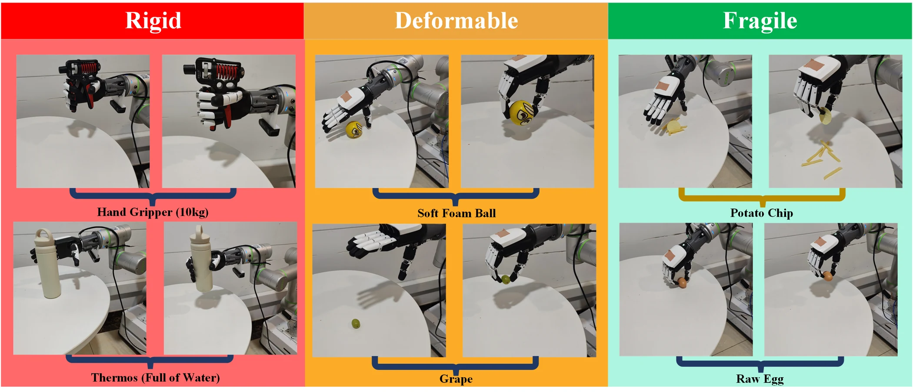
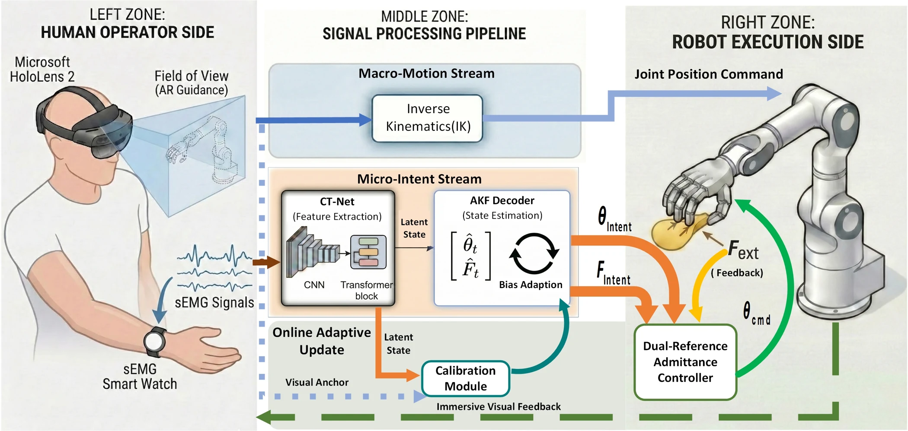
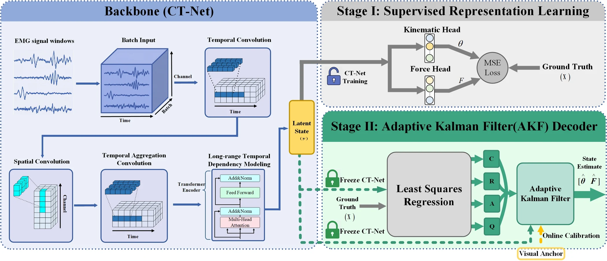
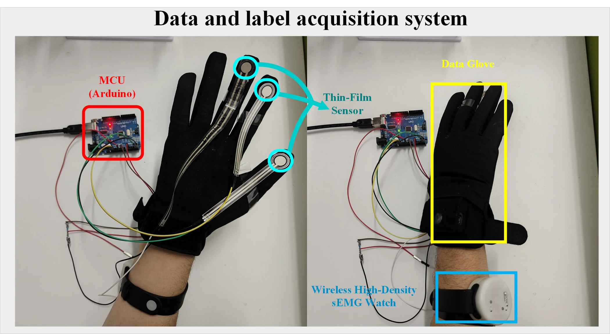
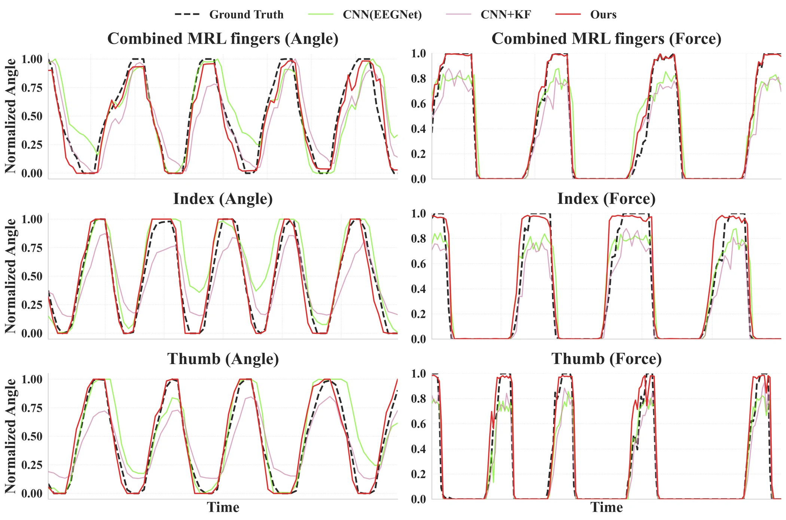
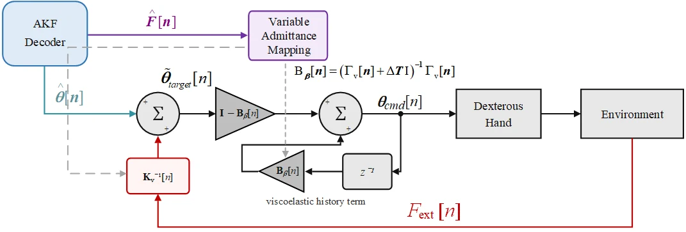
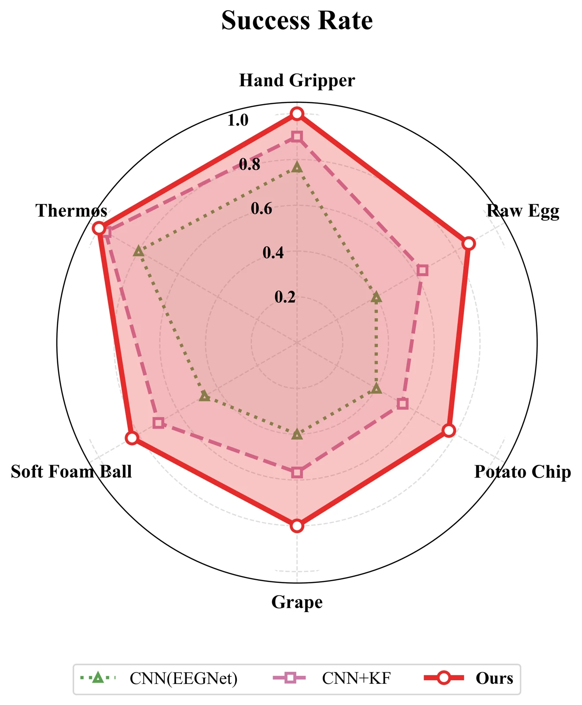
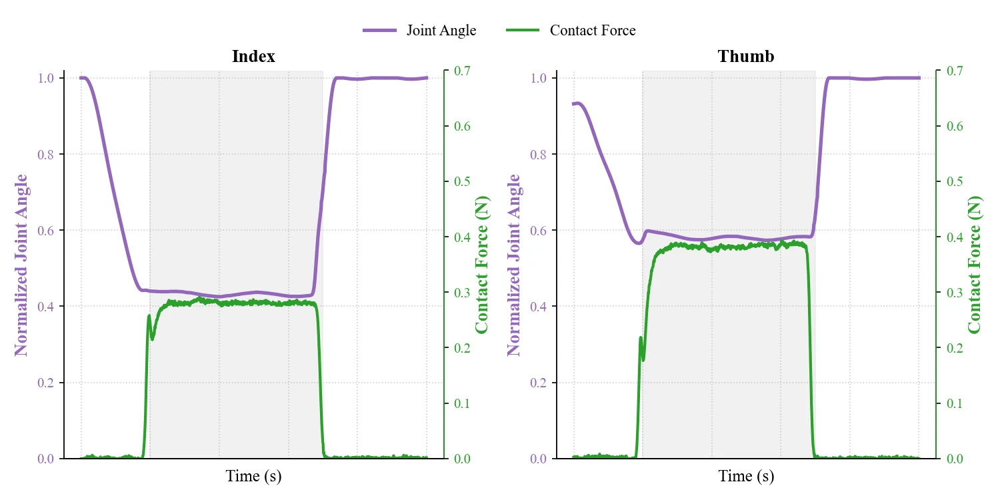
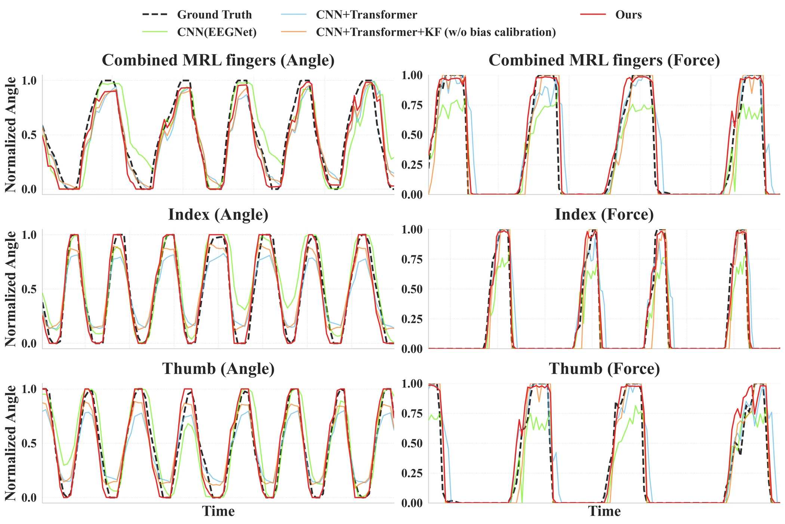

Visual + neuromotor
Eight-channel muscle signals are segmented into 200 ms windows. AR provides arm guidance and sparse hand-pose anchors.
Combining visual guidance and muscle signals to translate human motion and force intention into flexible robotic grasping.

AR captures macro-scale arm motion while sEMG captures hand motion and force intention. A learned decoder and sparse visual calibration connect these complementary signals to compliant hand control.
Eight-channel muscle signals are segmented into 200 ms windows. AR provides arm guidance and sparse hand-pose anchors.
A CNN–Transformer encodes sEMG into 64 features. A 12-state Kalman model estimates angles, forces, and their rates.
Decoded motion and force references modulate the hand command, balancing intended posture and external contact.



Stage I trains the CNN–Transformer to predict three joint angles and three forces. Stage II freezes the encoder and fits state dynamics and feature observations by least squares.
During online decoding, sparse visual poses update an exponential moving-average observation bias, while force-related states retain their predicted values.
The manuscript evaluates decoding across 15 recording sessions over 30 days. The following values are manuscript-reported results from one participant, with a 90% / 10% training and test split.
| Method | Angle R² ↑ | Angle RMSE ↓ | Force R² ↑ | Force RMSE ↓ |
|---|---|---|---|---|
| CNN | 0.594 | 0.238 | 0.865 | 0.150 |
| CNN + KF | 0.635 | 0.225 | 0.884 | 0.142 |
| Proposed method | 0.875 | 0.120 | 0.907 | 0.109 |

The study evaluates six grasping objects, spanning rigid, deformable, and fragile targets, with 30 trials for each object: a resistance handgripper, water-filled thermos, foam ball, grape, potato chip, and raw egg.




The repository provides selected modules for sEMG preprocessing, CT-Net training, Kalman identification and online adaptation, and dual-reference admittance. Project status: Under Review.
Input: 8 × 200 sEMG window. Outputs: six regression targets or a 64-dimensional feature vector.
↗Adaptive Kalman decoderBlock-structured 12-state identification, six intent outputs, and sparse visual-anchor bias correction.
↗Dual-reference admittanceA 20 ms recursive controller with force-dependent damping and stiffness.
↗Training stagesSupervised encoder learning followed by frozen-feature Kalman fitting.
Visuo-neuromotor Integration for Flexible Human-Robot Interactions · Under Review